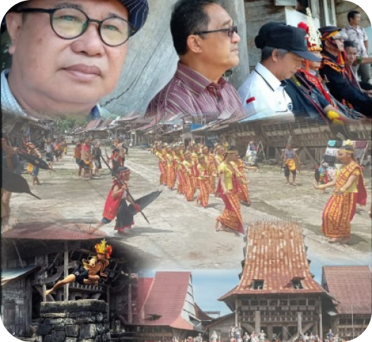
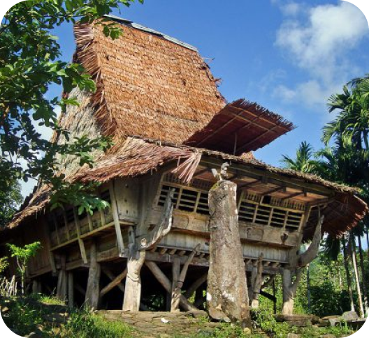

Rumah panggung suku Nias adalah simbol kekuatan, ketahanan, dan keindahan yang terwujud dalam arsitektur tradisional. Dibangun dengan bahan alami dan penuh dengan makna budaya, rumah ini tidak hanya sebagai tempat tinggal, tetapi juga sebagai cerminan kehidupan spiritual dan sosial masyarakat Nias.
Selamat Datang di Warisan Budaya Nias
Jelajahi Keindahan dan Keunikan Rumah Panggung Suku Nias, Kekayaan Budaya dari Pulau Nias yang Bertahan Melintasi Waktu.
Menginap di rumah panggung Nias adalah pengalaman yang luar biasa. Saya merasa seperti melangkah mundur ke masa lalu, merasakan kehangatan dan keindahan arsitektur yang kaya akan sejarah dan budaya.
Tur saya ke desa Hilinawalo benar-benar membuka mata. Melihat bagaimana rumah-rumah ini dibangun dan dipelihara dengan begitu hati-hati adalah sebuah kehormatan.
Rumah panggung Nias adalah warisan budaya yang sangat berharga, dan sebagian besar masih dimiliki oleh masyarakat adat. Namun, ada beberapa rumah yang bisa disewa untuk pengalaman tinggal jangka pendek atau tur budaya.
Rumah panggung Nias dibangun menggunakan teknik tradisional yang telah diwariskan dari generasi ke generasi. Bahan-bahan alami seperti kayu ulin dan bambu digunakan, dengan perhatian khusus pada kekuatan struktural dan keindahan estetika.
Apakah rumah panggung Nias tersedia untuk dibeli?Bagaimana proses pembangunan rumah panggung Nias?
Pulau Nias, yang terletak di lepas pantai barat Sumatra, merupakan rumah bagi budaya yang kaya dan sejarah yang mendalam. Rumah panggung Nias dapat ditemukan di berbagai desa, masing-masing dengan ciri khas dan keunikan tersendiri. Dari desa tradisional Hilinawalo hingga Hilinamoza, setiap rumah panggung menawarkan pandangan yang unik tentang kehidupan masyarakat Nias.
Home
Blog/Articles
Testimonials
FAQ
Properties
About Us
About Us
Rumah panggung Nias, atau dikenal sebagai Omo Sebua, telah menjadi bagian tak terpisahkan dari kehidupan masyarakat Nias selama berabad-abad. Struktur uniknya yang tinggi, dengan atap runcing dan ukiran kayu yang indah, dirancang untuk melindungi penghuni dari ancaman alam dan serangan musuh, sekaligus menunjukkan status sosial pemiliknya.
Kami adalah sekelompok pecinta budaya dan ahli arsitektur yang berdedikasi untuk melestarikan dan mempromosikan rumah panggung suku Nias. Dengan bimbingan dari tetua adat dan kolaborasi dengan masyarakat lokal, kami berkomitmen untuk menjaga keaslian dan warisan budaya ini.
Misi kami adalah untuk memastikan bahwa keindahan dan nilai budaya rumah panggung Nias tetap hidup dan dapat dinikmati oleh generasi mendatang. Kami percaya bahwa dengan melestarikan rumah-rumah ini, kita juga melestarikan jiwa dan sejarah suku Nias
Sejarah Rumah NiasTim dan Ahli BudayaMisi Pelestarian Budaya


Properties
Dikenal sebagai rumah kepala desa atau pemimpin suku, Omo Sebua merupakan struktur yang mengesankan dengan atap tinggi yang menjulang. Didesain untuk menghadapi berbagai tantangan alam dan sosial, rumah ini mencerminkan kekuasaan dan prestise. Dengan ukiran kayu yang rumit dan interior yang luas, rumah ini merupakan salah satu contoh terbaik arsitektur tradisional Nias.
Omo Hada adalah rumah tradisional masyarakat Nias yang biasanya dihuni oleh keluarga besar. Rumah ini memiliki desain panggung yang tinggi dengan ruang yang luas di bawahnya, sering digunakan sebagai tempat berkumpul atau menyimpan perahu dan barang-barang penting. Atapnya yang tinggi dan runcing serta dinding yang dihiasi ukiran, memberikan kesan agung dan megah.